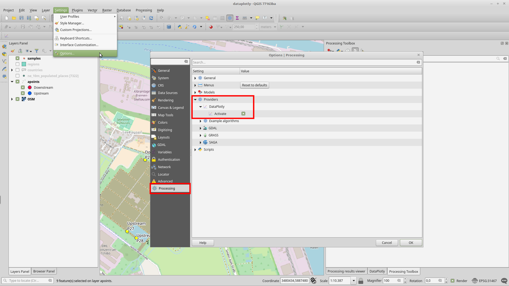
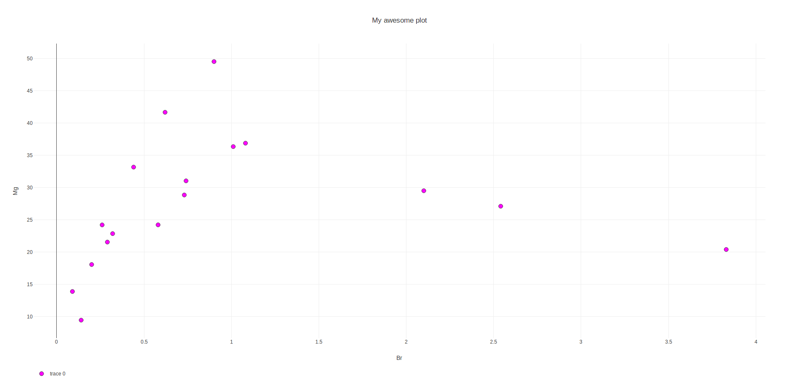

DataPlotly as Processing provider¶
From version 1.4 DataPlotly has been added as Processing provider thank to the work of Michaël Douchin of 3Liz.
This opens the doors to infinite possibilities:
- using all the Processing methods with DataPlotly
- creating batch plots with one click
- adding DataPlotly in the Processing Graphical Modeler
Activating DataPlotly for Processing¶
First thing to do is activating Processing and add DataPlotly as provider.
If not added by default you can go in Settings -> Options and
click on the last tab named Processing.
Expand the Provider menu and activate the DataPlotly provider:
{kind=link}
And then you will see the DataPltoly provider in the Processing Toolbox:

Simple DataPlotly usage¶
The Build a generic plot algorithm is a simplified version of DataPlotly plugin:
this means you don’t have all the customizations available, but still you can
create awesome plots.
The interface is very simple and the plot creation process is very straightforward:
- choose the layer
- choose the plot type
- adjust the additional options (plot title, X axis, Y axis and color)

DataPlotly will create 2 results:
htmlfile with the final plotjsonfile with all the plot specifications
The plot can be opened in the Processing -> Result Viewer:

And by simple double clicking on the menu entry, the plot will be opened in your default browser:
{kind=link}
If you want to save also the json file, you have to specify the path in the
DataPlotly Processing Window.